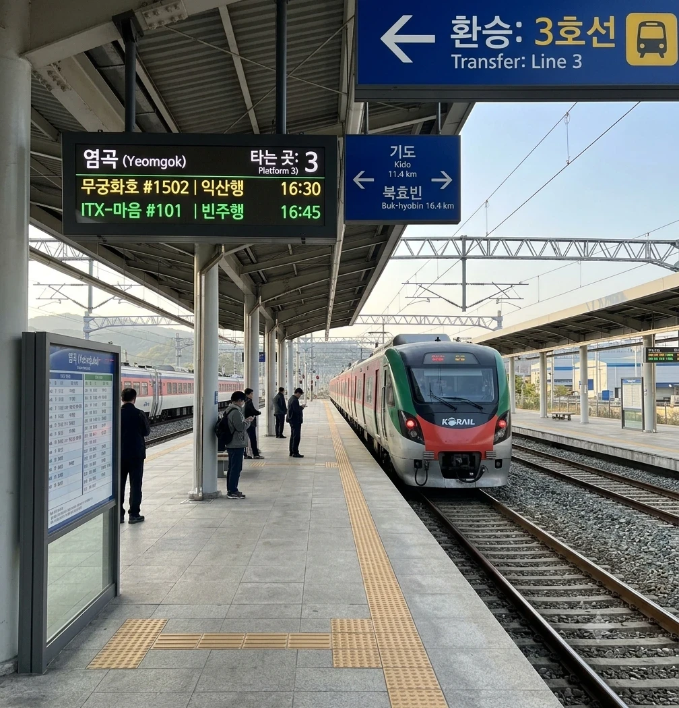
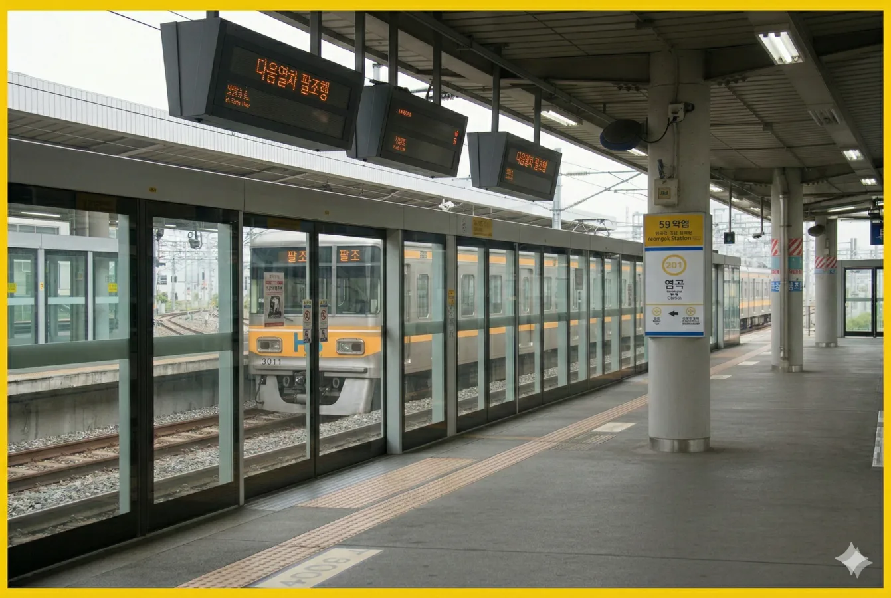

효빈국제공항으로 향하는 관문이자 공항신도시의 중심.
덕빈북도 기도군 염곡읍 염곡리에 위치한 강빈선 및 효빈 도시철도 3호선(역번호 323)의 철도역이다.
과거 염전이 있던 자리에 세워진 공항 배후 도시의 중심 역이다. 효빈 3호선은 이 역부터 지상 구간을 벗어나 효빈국제공항 방면으로 지하로 진입한다. 염곡관리역으로서 인근 역들을 관할하는 중요한 역할을 수행한다.
2004년 3월 7일, 강빈선 및 효빈 도시철도 3호선 개통과 함께 영업을 개시하였다. 공항 신도시 개발 계획에 맞춰 건설되었으며, 개통 초기부터 환승역으로 설계되어 이용이 편리하다. 지상 1층 규모의 간결한 역사 구조를 갖추고 있으며, 3호선 승강장은 지상 2층 높이에 위치하여 강빈선 승강장과 입체적으로 교차한다.
역 주변은 과거의 염전 골짜기 이미지를 완전히 벗어던지고 현대적인 물류 단지와 주거 단지가 조성되어 있다. 특히 공항 종사자들의 주거 비율이 높아 인근 신산역과 함께 '공항 마을'의 한 축을 담당하고 있다.

※ 2면 2선 상대식 승강장

| ↑ 주양 (완행) / 고송나루 (급행) | ||||
| 하행 (공항행) | ㅣ | ㅣ | 상행 (팔조행) | |
| ↓ 효빈국제공항 | ↓ 기도 | ||||
| 상행 | 3 효빈 도시철도 3호선 (완행/급행) | 주양 · 고송나루 · 청덕 · 동곡 · 팔조 방면 (급행 정차) |
| 하행 | 3 효빈 도시철도 3호선 (완행/급행) | 효빈국제공항 · 종점 방면 (급행 정차) |
매년 꾸준한 증가세를 보이고 있으며, 2022년 이후 공항 물류 단지의 확장으로 인해 이용객이 급격히 늘어났다. 2024년 기준 7,000명을 넘어서며 기도군 내 주요 거점역으로 자리 잡았다.
| 염곡역 이용객 통계 (3호선 기준) | ||
|---|---|---|
| 연도 | 일평균 이용객 | 비고 |
| 2020년 | 3,621명 | |
| 2021년 | 4,001명 | |
| 2022년 | 6,323명 | 물류단지 확장 |
| 2023년 | 6,345명 | |
| 2024년 | 7,192명 | 역대 최고치 갱신 |